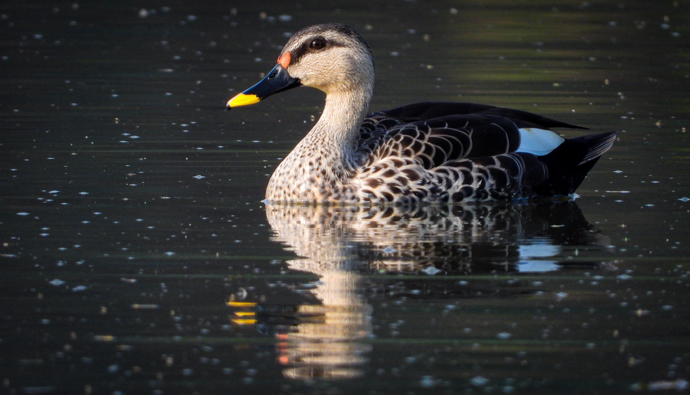

The Indian Spot-billed Duck is a large dabbling duck with a brown body, pale head and neck, and a distinctive yellow-tipped bill marked with dark patches. It is commonly found in freshwater wetlands, rivers, lakes, ponds, marshes, flooded fields, and other areas with shallow water. It feeds by dabbling in water and by grazing on vegetation, seeds, and other food on land. Compared with the Lesser Whistling Duck, the Indian Spot-billed Duck is larger and heavier, with a differently shaped bill and a more elongated body. The Lesser Whistling Duck has a more rounded head and generally warmer brown plumage, while the Spot-billed Duck has stronger contrasting markings. Compared with the Mallard, the Indian Spot-billed Duck has a distinctive spotted bill and does not show the adult male Mallard's bright green head and white neck ring. It also differs from the Gadwall, which has a more finely patterned grey body and a different bill coloration. The Indian Spot-billed Duck's yellow-tipped, dark-spotted bill is one of its most useful identification features. Its relatively large size, brown plumage, and contrasting wing markings further help distinguish it from other ducks found in Indian wetlands.